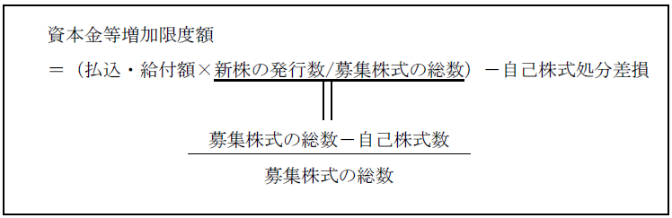

第２編 株式会社
第３章 株式
第１０節 募集株式の発行等
Ⅲ 株主割当ての手続
1. 非公開会社
(1) 原則
株主総会の特別決議による（会社法202条3項4号、309条2項5号)。
(2) 例外
以下の機関が決定することができる旨の定款の定めを設けることができる（会社法202条3項1号、2号)。
| 取締役会設置会社 | 取締役会非設置会社 |
| 取締役会の決議 | 取締役の決定(取締役の過半数の一致) |
2. 公開会社
取締役会の決議による（会社法202条3項3号）。
【株主割当ての決定】
| 公開会社 | 非公開会社 | |
| 株主割当て | 取締役会の決議 | 原則：株主総会特別決議 例外：定款の定めで取締役（会）による決定可 |
※有利発行の規制は存在しない。株主割当ては、申込み及び払込み又は給付をすれば株式の割当てを受けられるので、株主に不利益はないからである。
1. 募集事項等の通知
(1) 原則
株式会社は、株主割当てにより募集株式の引受人を募集する場合には、募集株式の引受けの申込みの期日の2週間前までに、株主（当該株式会社を除く）に対し、以下の事項を通知しなければならない（会社法202条4項)。これは、株主に募集株式の申込みの機会を与えるため、つまり、申し込むか考える期間である。
| ①募集事項 |
| ②株主が割当てを受ける募集株式の数 |
| ③募集株式の引受けの申込みの期日 |
株式会社が申込者に対してする通知は、申込者が株式会社に交付した書面に記載された住所に対して発すれば足り、この通知は、通常到達すべき時に到達したものとみなされる（会社法203条6項、7項）。
(2) 例外
募集事項の決定の日から申込みの期日までの間に2週間を置かない場合でも、通知の期間短縮に関する株主全員の同意があれば適法である。
2. 申込み
株主に募集株式を引き受ける権利がある場合であっても、引受け義務があるわけではないので、募集株式を引き受けようとする株主は、所定の期日までに申込みをしなければならない。申込みは、申込みをする者の氏名又は名称及び住所並びに引き受けようとする募集株式の数を記載した書面を株式会社に提出（又は電磁的方法により提供）してしなければならない（会社法203条2項、3項）。
なお、株主割当てによる場合において、株主が募集株式の引受けの申込期日までに募集株式の引受けの申込みをしないときは、その株主は募集株主の割当てを受ける権利を失う（会社法204条4項）。
申込みがされなかった分につき、特定の株主に割当て、当該部分を含めて募集株式の発行による変更の登記を申請することは、株主割当ての手続（会社法202条）と第三者割当ての手続（会社法199条）を区別する会社法の下では認められず、別の募集手続を必要とする（登研721P.177）。
3. 割当て
株主割当てによる場合には、既存の株主がその持株数に応じて募集株式を引き受けることになるので、割当てに関する手続は不要になる。
4. 払込み・給付
※払込み・給付の手続は、第三者割当ての場合と同様である（会社法208条1項、2項）。
Ⅳ 金銭以外の財産の出資（現物出資）
株式会社は、募集事項において、金銭以外の財産を出資の目的とする旨並びに当該現物出資財産の内容及び価額を定めた場合には、その価額を調査させるため、裁判所に対し、検査役の選任の申立てをしなければならない（会社法207条1項）。この申立てがあった場合には、裁判所は、これを不適当として却下する場合を除き、検査役を選任しなければならない（会社法207条2項）。
金銭出資をして株式の交付を受けた者の株式の内容と、現物出資者に対して交付される株式の内容との間で不均衡が生じることによって株主間の価値移転が起こることを防止するためである。
※登記の申請の際の添付書面
検査役の調査報告を記載した書面及びその附属書類の添付を要する（商登法56条3号イ）。
検査役の調査を要しない場合（会社法207条9項）
| 調査不要となる場合 | 添付書面 |
| ①現物出資をする募集株式の引受人に割り当てる株式の総数が発行済株式の総数の10分の1を超えない場合 | × |
| ②現物出資財産の価額の総額が500万円を超えない場合 | × |
| ③現物出資財産のうち、市場価格のある有価証券について募集事項として定められた価額が当該有価証券の市場価格を超えない場合 | 有価証券の市場価格を証する書面（商登法56条3号ロ） |
| ④現物出資財産について募集事項として定められた価額が相当であることについて弁護士、弁護士法人、公認会計士、監査法人、税理士又は税理士法人の証明（現物出資財産が不動産である場合には、当該証明及び不動産鑑定士の鑑定評価）を受けた場合 | 弁護士等の証明を記載した書面及びその附属書類（商登法56条3号ハ） |
| ⑤現物出資財産が株式会社に対する金銭債権（弁済期が到来しているものに限る）であって、当該金銭債権について募集事項として定められた価額が当該金銭債権に係る負債の帳簿価額を超えない場合 | 金銭債権について記載された会計帳簿（商登法56条3号ニ） |
①現物出資をする募集株式の引受人に割り当てる株式の総数が発行済株式の総数の10分の1を超えない場合
割当てる株式数が少ないので、利害関係人に与える影響が少ないからである。また、①に該当することは申請書類と登記記録を確認すればわかるため、①に該当することを証する添付書面を別途添付する必要はない。
②現物出資財産の価額の総額が500万円を超えない場合
現物出資財産の価額の総額が少ないので、利害関係人に与える影響が少ないからである。②に該当することは募集事項の決定を証する書面を確認すればわかるため、②に該当することを証する添付書面を別途添付する必要はない。
③現物出資財産のうち、市場価格のある有価証券について募集事項として定められた価額が当該有価証券の市場価格を超えない場合
有価証券の市場価格は、客観的交換価値を示し、公正な価格といえる上、誰でも知ることができ、検証が容易だからである。
④現物出資財産について募集事項として定められた価額が相当であることについて弁護士、弁護士法人、公認会計士、監査法人、税理士又は税理士法人の証明（現物出資財産が不動産である場合には、当該証明及び不動産鑑定士の鑑定評価）を受けた場合
検査役の選任や調査には時間がかかるため、専門家の評価による代替措置が認められた。
④の場合に必要となる弁護士等の証明を記載した書面及びその附属書類には、証明又は鑑定評価をした者が自然人であるときはその資格が記載されていることを要するが、その資格を証する書面（ex. 弁護士の登録をしていることを証する書面、税理士の資格を証する書面等）は添付することを要しない（平14.12.27民商3239）。
また、現物出資の目的たる財産が不動産である場合は、公認会計士等の証明及び不動産鑑定士の鑑定評価を記載した書面並びにその附属書類を添付しなければならない。しかし、固定資産課税台帳に登録されている価格に関する証明書は添付書類とされていない（商登法56条3号参照）。
⑤現物出資財産が株式会社に対する金銭債権（弁済期が到来しているものに限る）であって、当該金銭債権について募集事項として定められた価額が当該金銭債権に係る負債の帳簿価額を超えない場合
弁済期が到来している場合、会社が弁済しなければならない価額は確定しているため、評価の適正性について問題は生じないからである。
※取締役および監査役が現物出資に関する事項を調査する旨の規定はないため、これらの者の調査報告書を添付する必要はない（商登法56条3号参照）。
Ⅴ 出資の履行等
1. 払込金額の全額の払込み・現物出資財産の給付
募集株式の引受人は、募集事項として定めた払込み又は給付の期日又はその期間内に、募集株式の払込金額の全額の払込み、若しくは現物出資財産の給付をしなければならない（会社法208条1項、2項）。
会社に対する債権との相殺の可否
| 引受人からの相殺 | ×（会社法208条3項） |
| 会社からの相殺 | ○ |
| 相殺契約 | ○ |
通常の募集株式の引受人は、上記の期日又は期間内に出資の履行をしないときには、株主となる権利を失う（会社法208条5項）。権利を失った引受人の株式は失権株となる。
取締役の報酬等として発行する募集株式については、払込み又は給付を要しない（会社法202条の2第1項1号）。
2. 権利株の譲渡の制限
出資の履行をすることにより募集株式の株主となる権利（権利株）の譲渡は株式会社に対抗することができない（会社法208条4項）。株式会社の株式発行事務の手続の便宜のためである。
【設立時発行株式の場合】
払込みをすることにより設立時発行株式の株主となる権利の譲渡は、成立後の株式会社に対抗することができない（会社法63条2項）。株式会社の設立事務の円滑を図るためである。すなわち、株式会社成立前に株主となる権利が譲渡されると、誰が引受人としての払込義務を負うかが株式会社にとって不明となり、設立事務が滞るおそれがあるからである。しかし、当事者間では有効である（最判昭31.12.11）。
1. 増加する資本金の額
株式会社の資本金の額は、会社法に別段の定めがある場合を除き、設立又は株式の発行に際して株主となる者が当該株式会社に対して払込み又は給付をした財産の額（失権株は計算に入れない）である（会社法445条1項）。
ただし、この払込み又は給付に係る額の2分の1を超えない額は資本金として計上しないことができる（会社法445条2項）。資本金として計上しないことと定めた額は、資本準備金として計上しなければならない（会社法445条3項）。
ここまでを計算式にすると、以下のようになる。

ここで、資本金等増加限度額の算出方法が問題となる。
2. 資本金等増加限度額の算出方法
(1) 自己株式を含まず新株のみの発行である場合
この場合は、資本金等増加限度額は払込み又は給付を受けた額（会社法445条1項）となる。
（具体例）
募集株式の数を1000株として募集株式の発行等を行うときに、1000株すべてについて新たに株式を発行する方法で発行する場合である。これにより、発行済株式の総数は1000株増えることになる。
(2) 自己株式のみの交付である場合
自己株式は、既に発行された株式である。この株式は、発行時に資本金の額を増加させている。また、株式会社が自己株式を取得した際に資本金の額を減少していない。そのため、資本金の額が増加することはない。
よって、この場合は、登記事項は発生しない。
（具体例）
募集株式の数を1000株として募集株式の発行等を行うときに、1000株すべてについて自己株式を交付（処分）する方法で発行する場合である。これにより、発行済株式の総数は増えない。
(3) 新株と自己株式を混在させて発行する場合
この場合は、計算が必要であり、会社計算規則14条1項にその定めがある。当該規定を式にすると、以下のようになる。

払込み又は給付を受けた財産の額のうち、新株の発行に対応する部分から自己株式処分差損を控除した額が資本金等増加限度額となる。
※自己株式処分差損
自己株式処分差損とは、帳簿価格の評価と比べ、自己株式を処分することによって損になる額、すなわち、自己株式を処分する際に株主から支払われる額から自己株式の簿価（取得した時の値段：仕入れ値と考えればよい）を控除した価格がマイナスになる場合におけるマイナス分である。
（具体例）
総額1000万円の出資に対して、新たに発行する株式800株、自己株式200株（簿価合計500万円）の発行及び処分で対応した場合、簿価500万円の自己株式を200万円（出資の総額のうち自己株式に対応する部分）で処分するのであるから、300万円が損になる額すなわち自己株式処分差損となる。この損になる額300万円を800万円（出資の総額のうち新株に対応する部分：資本金になりうる部分）から控除して、これを資本金等増加限度額としているのが上記の計算である。この例では、資本金等増加限度額は500万円となる。
2. 取締役等の報酬等である募集株式の発行の場合
(1) 事前交付型と事後交付型
事前交付型（株式割当後に役務を提供する場合）は会社計算規則42条の2第1項から第3項に、事後交付型（株式割当前に役務を提供する場合）は会社計算規則42条の3第1項から第3項までに規定が置かれている。
(2) 資本金増加の時期
取締役等が募集株式を対価とする役務を提供する時期に応じて、増加する時期が異なる（会社法445条6項）。
①株式割当後に役務を提供する事前交付型
各事業年度の末日（臨時計算書類を作成しようとし、又は作成した場合にあっては臨時決算日）
②株式割当前に役務を提供する事後交付型
割当日
なお、①②どちらの場合も、資本金等増加限度額の2分の1を超えない額は、資本金として計上せず、資本準備金とすることができる（会社計算規則42条の2第2項、同第3項、42条の3第2項、同第3項）。
1. 通常の募集株式の発行
募集株式の引受人は、以下の日に出資を履行した募集株式の株主となる（会社法209条）。
・払込み等の期日を定めた場合：（払込期日前に払い込んでも）払込期日
・払込み等の期間を定めた場合：出資を履行した日
2. 取締役等の報酬等である募集株式の発行
取締役の報酬として発行する場合には、出資の履行を要しないことから、引受人は割当日に株主となる（会社法209条4項）。